Производство холодного асфальта
Омская область, Омский район, д.Зеленое Поле, ул.Центральная,97
Производство и продажа холодного асфальта от 350р.
Производство, продажа и укладка круглый год
Производство холодного асфальта в Омске. На рынке уже более 2 лет. Вся продукция соответствует ГОСТ 9128-2013.
Заказать консультацию бесплатно
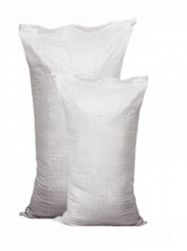
Холодный асфальт, мешок 35кг
350₽
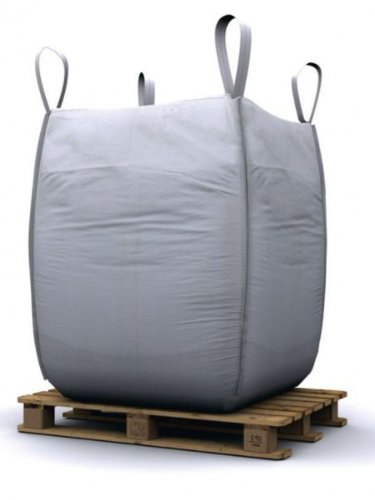
Холодный асфальт, биг-бэг 1 тонна
10 000₽
Холодный асфальт, биг-бэг 5 тонн
50 000 ₽
45 000₽
Холодный асфальт, преимущества
- Возможность использования при отрицательных температурах.
- Длительный срок хранения.
- Не требуется применять специальные средства для ремонта.
- Высокая адгезия и повышенная устойчивость на использованных участках.
- Гидроизоляционные свойства.
- Быстрая и простая укладка.
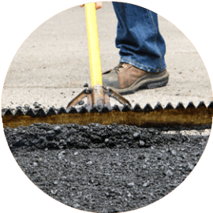
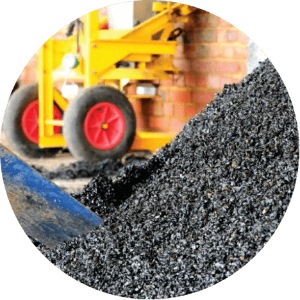
Холодный асфальт, что это?
Холодный асфальт используется как всепогодная смесь, полностью готовая к укладке круглый год. Главная особенность холодного асфальта, является возможность быстро заделать ямы, выбоины на дорогах и гарантировать долговечность ремонта
и высокую степень гидроизоляции покрытия. Период хранения составляет около 2 лет в открытом виде, в герметично запаянных мешках до 10 лет.
Применение холодного асфальта
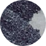
ПОДЪЕМЫ И СПУСКИ
Быстрое и экономичное создание искусственных подъемов и спусков
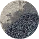
ЛОКАЛЬНЫЙ РЕМОНТ
Быстрый и качественный локальный ремонт повреждений в асфальтовых покрытиях
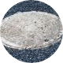
ЛЮКИ, ОТВОДЫ
Быстрая заделка дорожных люков, отводов воды и выравнивание поверхности
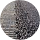
ДЕФОРМАЦИОННЫЕ ШВЫ
Быстрый и качественный ремонт и заделка деформационных швов
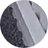
ОТМОСТКА ЗДАНИЙ
Ремонт фундаментов зданий и сооружений в виде отмостков

ПОДЪЕЗДНЫЕ УЧАСТКИ
Ремонт подъездных участков промышленных зон и торговых баз
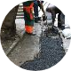
ТРУДНОДОСТУПНЫЕ УЧАСТКИ
Ремонт труднодоступных участков дорог
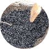
ЯМЫ
Ямочный ремонт дорог и придомовых территорий
Стоимость вышеуказанных услуг от 500р. кв.м.
Укладка холодного асфальта
Холодный асфальт отличается простой укладкой. Операции максимально упрощены.Место укладки не требуется поливать разными видами мастик, горячим битумом или эмульсиями. Данный тип асфальта, поставляемый в удобной герметичной упаковке, позволяет
значительно сократить затраты на восстановление эксплуатируемых поверхностей и прокладку новых дорожных покрытий.
Отзывы о холодном асфальте
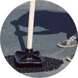
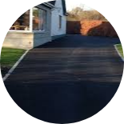
Надо было заделать две ямы, глубиной 4 сантиметра каждая и размером 20*30 сантиметров. Хватило 2 мешков по 25кг холодного асфальта. Доставить можно самостоятельно на машине в багажнике. По деньгам это не более 500 рублей. А сколько
бы стоили материалы-аналоги? Вообщем отличный материал для быстрого ремонта выбоин на дороге или площадке.
АлександрООО АЛМЕСТ
В ноябре, когда температура воздуха колебалась в районе ноля градусов и уже начал выпадать первый снег, возникла необходимость срочно отремонтировать 2 небольших участка асфальтированной отмостки у жилого дома.
Приобрел 10 мешков асфальта. Заделал поврежденное место по инструкции. Прошло уже 10 месяцев, заплатка держится отлично нигде не выкрошилась, поверхность гладкая.
Приобрел 10 мешков асфальта. Заделал поврежденное место по инструкции. Прошло уже 10 месяцев, заплатка держится отлично нигде не выкрошилась, поверхность гладкая.
РоманЧастное лицо
На мой взгляд основные достоинства: возможность его укладки при температуре до минус 25 градусов и фасовка в мешки по 30 кг.
Для быстрого ремонта небольших асфальтированных участков данный материал подходит лучше всего, а в зимний период, когда асфальтовые завода уже не работают - практически единственный который позволяет выполнить быстрый и качественный ремонт.
Для быстрого ремонта небольших асфальтированных участков данный материал подходит лучше всего, а в зимний период, когда асфальтовые завода уже не работают - практически единственный который позволяет выполнить быстрый и качественный ремонт.
СергейОАО "ТРАНС-ПИТЕР"
Не знаете, решит ли холодный асфальт Вашу проблему?
Наши специалисты помогут подобрать оптимальное решение, с учетом проблемных особенностей